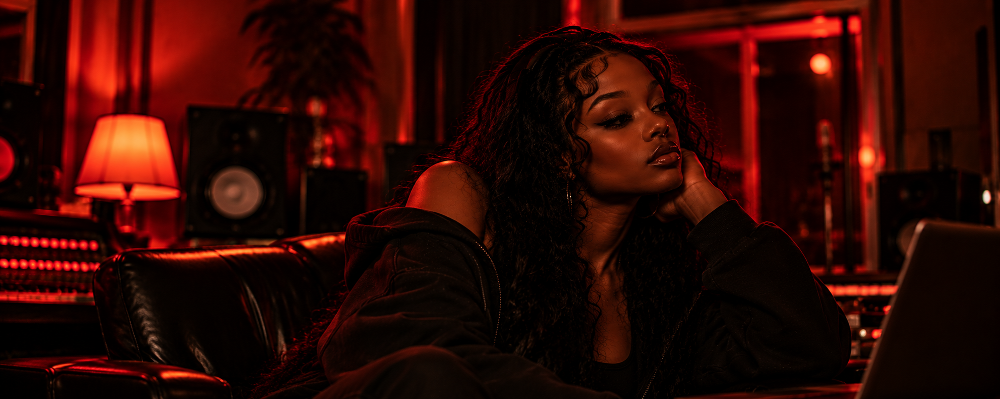

▶ OUR ARTISTS
NIA
BEAUTY.
STRENGTH.
PURPOSE.

NIA
— THE ARTIST
NIA
Nia brings a smooth yet powerful presence to UNISOGHN.
Her voice is rich, expressive, and full of life — effortlessly
blending strength and softness in every verse.
As a vocalist, she adds balance, beauty, and a unique
perspective to the group's sound. Nia is inspired by love,
self-worth, and the journey of becoming the best version
of herself.
She's here to make music that heals, connects, and
reminds people of their power.